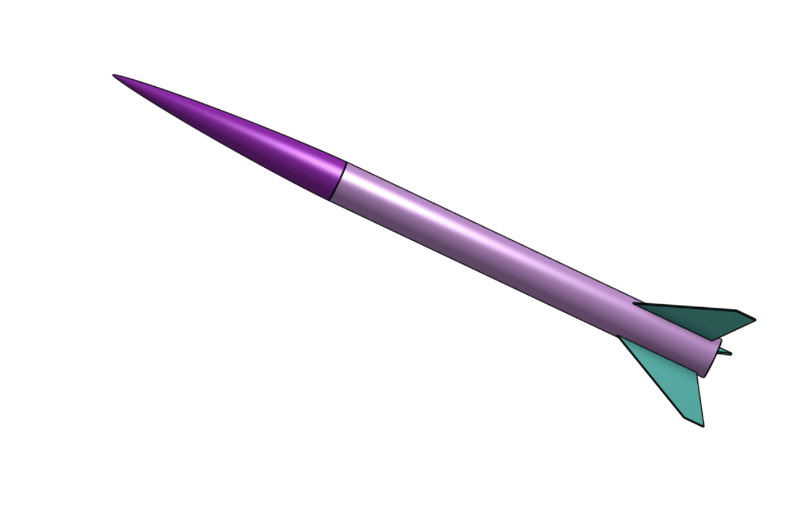
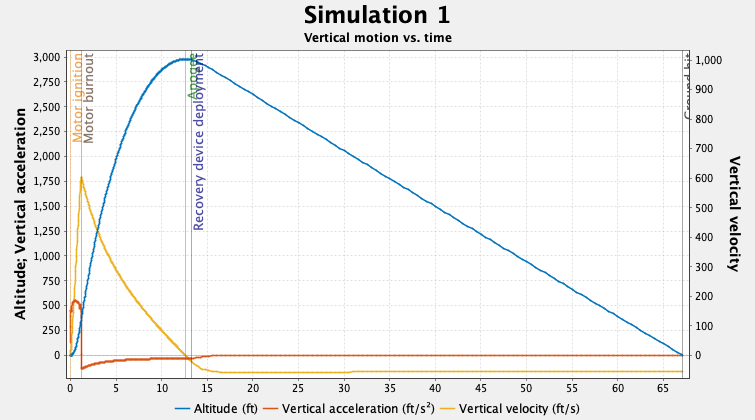
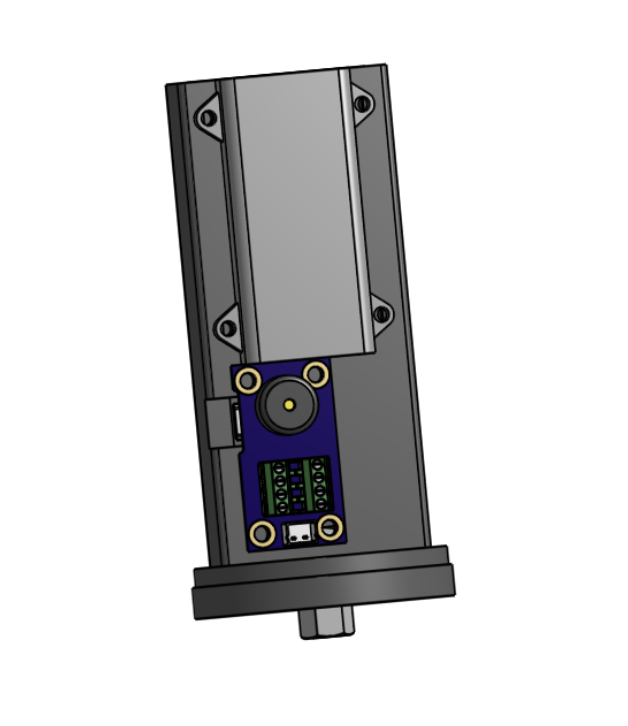
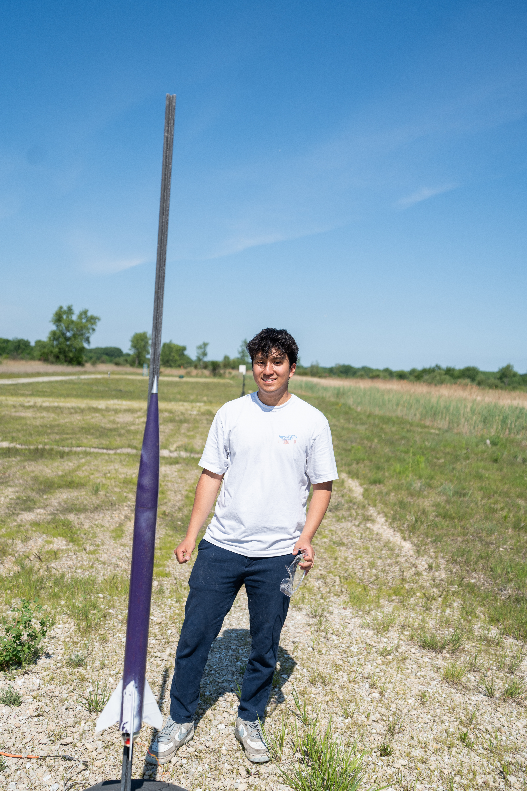

Overview
Owning the full process, not just one subsystem
I wanted experience owning the entire high-power rocketry process rather than just a single subsystem. This was my first hands-on project where I independently managed the full design, build, and launch of a high-power rocket, meeting the construction, stability, and recovery requirements for H-class motor flight. Beyond building the kit itself, I added my own instrumentation on top of it - a altimeter system to actually record altitude and velocity data in flight, rather than relying on a visual apogee estimate the way a first build typically would.
Design & Planning
Weighed, modeled, and simulated before a single part got glued
I selected the Wildman Rocketry 3" fiberglass kit for its durability and modularity - it includes the nose cone, payload and booster airframes, coupler, centering rings, fins, motor mount, bulkhead, hardware, recovery harness, and parachute. Rather than trusting generic manufacturer specs, I weighed every individual component and matched weight, position, and dimensions in OpenRocket so the simulated flight behavior - stability margin, apogee, recovery timing - actually reflected the real hardware being built.
I also modeled the full rocket in OnShape to plan the internal layout and visualize assembly before committing to epoxy, iteratively updating the CAD as I added custom parts and made modifications through the build.
Motor selection was driven directly by the simulation, not a guess. I ran the weight-matched model through OpenRocket to check how different motors' burn time and total impulse translated into predicted apogee, using the simulated altitude-versus-time curve to confirm a motor choice that would get the rocket to a solid, safe apogee without under- or over-shooting it.


OnShape internal layout model used to plan assembly and custom parts (left) - OpenRocket flight simulation used to confirm the motor choice would reach a solid, safe apogee (right)
Altitude & Speed Tracking
Adding real flight data on top of the base kit
A stock build like this typically relies on a visual estimate of apogee - watching the rocket and guessing how high it went. I wanted actual flight data instead, so I added an EasyMini altimeter to record altitude and velocity throughout the flight. That meant wiring the altimeter into the airframe with its own power and arming switch, independent of the rest of the recovery hardware.
The altimeter also needed somewhere secure to live. I designed and 3D-printed a custom mount in OnShape to hold the EasyMini inside the nose cone, positioning it so it would stay isolated from the recovery harness and parachute while still recording accurate data through the flight.

Custom 3D-printed altimeter mount, designed in OnShape to secure the EasyMini inside the nose cone bay
Fabrication & Assembly
Two epoxies, a custom jig, and a dry fit before anything was final
All fiberglass components were sanded to prep the surfaces for bonding, then body sections and the coupler were epoxied together with high-strength adhesive. Two different epoxy applications were used depending on the joint: internal fillets for the motor tube to airframe bond, and external fillets for attaching the fins to the body, each suited to the load path and accessibility of that specific joint.
Recovery redundancy was built in with a Y-harness for the shock cord, with connections embedded directly in epoxy rather than relying on hardware alone. To make sure the fins went on straight, I designed and 3D-printed a fin alignment jig in OnShape rather than eyeballing the angles by hand. Before any of it was final, I ran a full dry-fit assembly to check alignment, stability, and component integration.
Launch & Recovery
Launched, flown, and recovered with only minor cosmetic scratches
The rocket launched on June 6, 2026 at Richard Bong State Recreation Area with NUSTARS, flying on an Aerotech H128W motor. The EasyMini altimeter flew onboard to capture altitude and velocity data through the flight - I don't have that data pulled off the unit yet, but it'll be part of the record from a future flight of this system. The rocket launched and landed safely, with full recovery achieved and only minor cosmetic scratches to show for it.


Liftoff on an Aerotech H128W (left) - with the completed build ahead of launch (right)